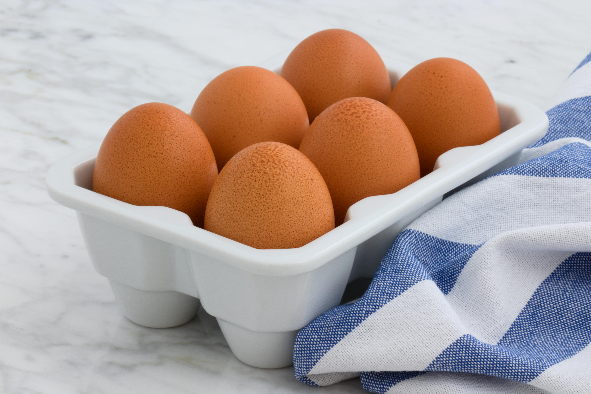

Green scrambled eggs

Description of recipe
Zazz up your scrambled egg routine with this colorful and healthy spin on scrambled eggs. Spinach adds a daily dose of vegetables while the goat cheese gives a satisfying tang.
Ingredients
- 2 eggs
- 1 cup frozen spinach
- 1/2 cup goat cheese
- Salt and pepper to taste
Procedure
- Crack the eggs into a small bowl and scramble with a fork.
- Add spinach and mix.
- Heat skillet to medium heat.
- Pour egg mixture into pan.
- Crumble goat cheese onto cooking eggs.
- Cook for 2 minutes. Then, flip one half of the omelette over onto itself.
- Cook each side another minute. Then, serve.
Back to homepage